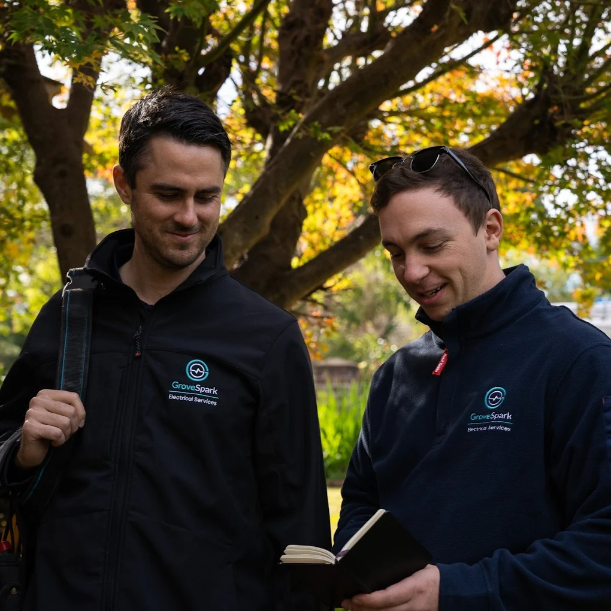

Grove Spark Electrical Services is the electrician St Ives families trust to keep their homes safe and compliant. Master Electrician Joshua Grove (Licence 363893C) founded the company over a decade ago with a clear mission: deliver honest, high-quality electrical work that protects families across Sydney's North Shore. Joshua and his licensed team specialise in electrical safety inspections, switchboard upgrades, safety switch installation, and RCD testing for residential properties throughout Ku-ring-gai. Every job is completed to Australian Standards with a full Certificate of Compliance. Grove Spark
Why Should Every St Ives Home Have an Electrical Safety Inspection?
An electrical safety inspection is the single most effective way to identify hidden hazards before they cause harm. A licensed electrician in St Ives will examine your switchboard, test all safety switches and RCDs, inspect visible wiring for damage or deterioration, and check that circuits are not overloaded. For homes in the Ku-ring-gai area that are more than twenty years old, these inspections frequently uncover issues that the homeowner had no idea existed, including loose connections, absent earth bonding, and non-compliant modifications made by previous owners. Grove Spark recommends an inspection every five years for established North Shore properties and after any renovation or major appliance installation. see how we compare to other electrical contractors

What Are the Most Common Electrical Hazards in Ku-ring-gai Homes?
Across the suburbs of Ku-ring-gai, the most frequent electrical hazards that Grove Spark encounters include outdated ceramic fuse switchboards that lack modern safety switch protection, deteriorating wiring insulation in roof cavities where heat exposure accelerates breakdown, overloaded circuits in kitchens and living areas where appliance use has grown far beyond the original design capacity, and DIY electrical work that does not meet Australian Standards. Each of these issues carries real risk. A ceramic fuse board cannot trip fast enough to prevent electrocution, degraded insulation can arc and start a roof cavity fire, and overloaded circuits generate excessive heat in connections and cables that were never rated for that load.
How Do Safety Switches Protect Your Family in St Ives?
Safety switches, also called residual current devices or RCDs, monitor the flow of electricity through a circuit and disconnect the supply within milliseconds if they detect current leaking to earth, which is what happens when a person receives an electric shock. In New South Wales, safety switches are mandatory on all power point circuits and lighting circuits in new homes, but many older St Ives properties only have them on selected circuits or not at all. electrician turramurra Grove Spark installs and tests safety switches across all circuit types to bring your North Shore home up to the highest standard of personal protection, well beyond the minimum legal requirement.
What Does a Switchboard Upgrade Involve for a St Ives Property?
Replacing an old switchboard is one of the most important electrical safety improvements you can make. The process begins with your electrician isolating the main supply and removing the existing board, which may contain ceramic fuses, rewireable fuse holders, or early-model circuit breakers that no longer meet current standards. The new switchboard is then installed with modern circuit breakers for each circuit, safety switches on all circuits, and surge protection to guard against voltage spikes. For St Ives homes, Grove Spark also labels every circuit clearly so that future maintenance and emergency isolation are straightforward. The entire process typically takes a single day, and your electrician coordinates with your energy distributor to manage any temporary supply interruptions.

How Do St Ives Chase Residents Benefit from Local Electrical Safety Expertise?
St Ives Chase is a pocket of the Upper North Shore where homes back onto bushland and national park, creating a unique set of electrical safety considerations. Properties in this area face higher exposure to wildlife interference with overhead service lines, increased vegetation contact with external wiring, and longer power restoration times during storms because of the bushland setting. A local electrician who understands these specific conditions can recommend targeted solutions such as wildlife guards on service entries, improved weatherproofing on outdoor circuits, and backup power options for homes where supply interruptions are more frequent. electrician north shore sydney Grove Spark serves St Ives Chase residents with the same responsive, knowledgeable approach that the broader St Ives community has relied on for over a decade.
When Should You Call an Emergency Electrician in St Ives?
Certain electrical situations demand immediate professional attention. If you notice a burning smell from a power outlet or switchboard, see sparking or scorch marks on switches, experience a complete loss of power that is not related to a network outage, or receive a tingling sensation when touching an appliance, you should turn off the affected circuit at the switchboard and call a licensed emergency electrician straight away. Grove Spark offers emergency electrical services across St Ives, Pymble, Killara, and the wider Ku-ring-gai area, ensuring that dangerous situations are resolved quickly and safely before they escalate into fire or injury.
How Does Smoke Alarm Compliance Protect St Ives Families?
New South Wales legislation requires working smoke alarms on every level of a residential property and in hallways connecting bedrooms. For properties being sold or leased in St Ives, the requirements are even more specific, mandating interconnected photoelectric smoke alarms that are either hardwired or powered by a ten-year lithium battery. A licensed electrician in St Ives can supply, install, and test compliant smoke alarm systems that meet every requirement under the current regulations. Grove Spark handles smoke alarm compliance for homeowners, landlords, and property managers across the Ku-ring-gai council area, providing documentation that satisfies both legislative requirements and insurance obligations. Ready to find the right electrical safety solution in St Ives? Contact Grove Spark Electrical Services at 0484 301 155